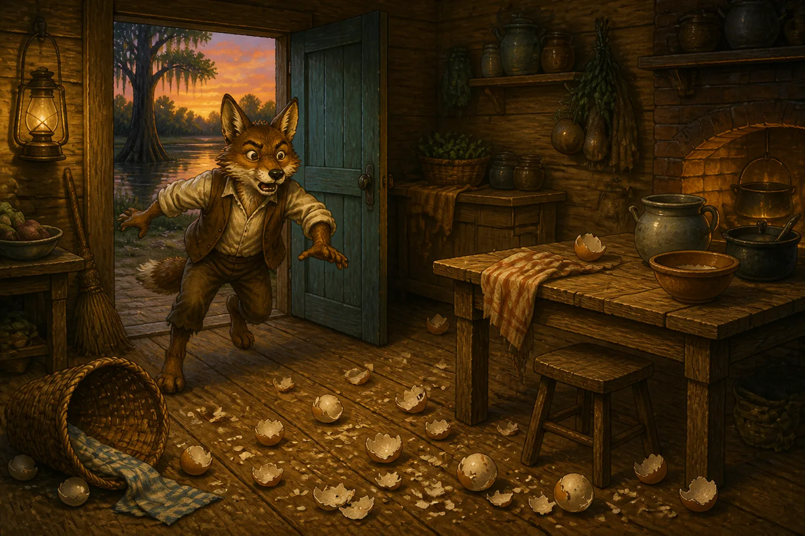

One day, quite early, Compair Lapin arose, and he felt hunger gaining upon him. He looked everywhere in the cabin; he found nothing to eat. He ran towards Compair Bouki. When he arrived, he saw Compair Bouki, who was gnawing a bone.
— Eh! Compair Bouki, I had come to take breakfast with you; but I see that you don’t have anything famous to give me.
— Times are hard, Compair Lapin; there are no more rations in the cabin; only this bone left. Compair Lapin reflected a little.
— Well! Compair Bouki, if you wish, we shall go hunting for the eggs of the tortoise.
— Agreed upon! let us go right off. Compair Bouki took his basket and the hoe, and they started towards the bayou in the woods.
— Compair Lapin, I don’t often go hunting for tortoise eggs; I don’t know well how to find them.
— Don’t trouble yourself, Compair Bouki, I find all the time a place where tortoises lay their eggs. You, you will dig them up. When they arrived at the bayou, Compair Lapin walked slowly, looking well on this side and on that side. Soon he came to a dead stop.
— Compair Bouki, the tortoise thinks she is cunning. She scratches the ground with her big paw, and she lays her eggs in a hole; then she puts a little sand on them, and then she scatters leaves on her nest. You see this hillock I take off the leaves, and scratch with your hoe; sure you will find eggs. Compair Bouki did what Compair Lapin told him, and they saw a pile of eggs shining in that hole.
— Compair Lapin, you are more cunning than I; I am very glad to have you for my friend. Compair Lapin shared the eggs; he gave half to Compair Bouki.
— Compair Bouki, I am very hungry; I am going to eat my eggs immediately.
— Do as you want, Compair Lapin; I shall take mine to my wife to have them cooked. They went on a long time still, and they found many eggs. Compair Lapin always ate his; Compair Bouki did not like raw eggs; he put them all in his basket.
— Compair Bouki, I am beginning to be tired; I believe it is time for us to return home.
— I have enough eggs for to-day, Compair Lapin; let us go back.
— As they were going, towards the river, Compair Lapin said to himself: Compair Bouki does not know how to find tortoise eggs; it is I who found them; they ought all to belong to me. I must make some trick to gain them.
— As they were nearly arrived at the river, Compair Lapin said: Compair Bouki, I forgot to take some eggs for my old mother. You would be very kind to lend me a dozen. I shall return them to you another time.
— Compair Bouki gave a dozen, and they went each on his way. Compair Lapin went to put his dozen of eggs in his cabin, then he went to Compair Bouki’s. When he came near the cabin of Compair Bouki he began to complain, and to hold his belly with both hands. Compair Bouki came out — What is the matter with you, Compair Lapin? You don’t look very well.
— Oh! no, Compair Bouki, those eggs have poisoned me. I beg of you; quick, run to get the doctor.
— I shall run as fast as I can, daddy. As soon as Compair Bouki started, Compair Lapin went to the kitchen and fell to eating tortoise eggs.
— Thank you, great Lord, I shall eat my belly full to-day. The physician lives far, I have the time to eat all before they come. When Compair Lapin had nearly finished eating the eggs, he heard Compair Bouki speaking outside.
— Doctor Monkey, I am very glad that I met you on the road; my friend is very sick.
— Compair Lapin did not lose any time; he opened the window and jumped out. Compair Bouki came into the cabin; he did not see Compair Lapin. He ran into the kitchen; the shells of the eggs were scattered all about. Compair Lapin was already in the fields. Compair Bouki tore his hair, he was so angry. He started to run after Compair Lapin. Compair Lapin had eaten so many eggs, that he was not able to run fast. When he saw Compair Bouki was pressing him too close, he hid in a hole in a tree. Compair Bouki called Compair Torti, who was passing on the road.
— Compair Torti, pray come to watch Compair Lapin, who stole all your eggs. I am going to get my axe to cut down this tree.
— Go quickly, Compair Bouki; I shall watch the rascal well. When Compair Bouki started, Compair Lapin said: Compair Torti, look in this hole; you will see if I have your eggs. Compair Torti lifted his head; Compair Lapin sent some decayed wood in his eyes. Compair Torti went to wash his eyes in the bayou; Compair Lapin ran off immediately. Compair Bouki came to cut the tree; he saw that Compair Lapin had already run away. He was so angry he went to Compair Torti, on the bank of the bayou, and he cut off his tail with his axe.
— It is for this reason that the tail of the tortoise is so short to this very day.
